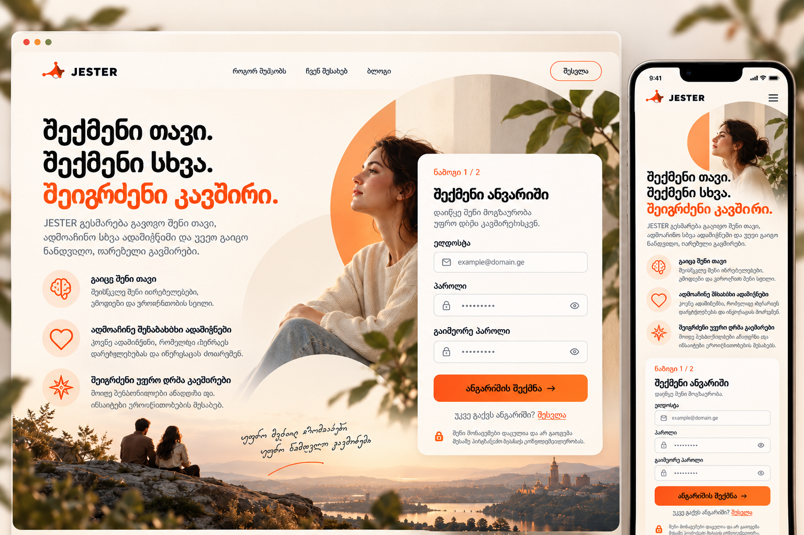

Reference crops exclude the presentation frame and phone status bar. Images are scaled uniformly to the same width; they are not stretched to equal heights. Photography, the available brand vector and annotation still require founder review.
APPROVED — desktop UI crop

UI region: x24, y100, width1160, height914 in the supplied 1536×1024 reference.
IMPLEMENTED — full page, 1440×900 viewport
Full scrollable composition at the same normalized width as the reference. No viewport-height compression.
APPROVED — mobile UI crop
The supplied reference ends partway through the mobile privacy note.
IMPLEMENTED — 390px full page
Scrollable page at 390×844. Inputs retain 16px text and 44px height.
BEFORE — full page, 1440px wide
Previous viewport-compressed composition. Same display width as the after image.
AFTER — full page, 1440px wide
Width-based reference proportions, seated body, larger form and deeper foreground. Natural scrolling.
BEFORE — 390px full page
Existing mobile structure.
AFTER — 390px full page
Same content geometry and controls. Only the logo symbol viewport ratio was corrected.